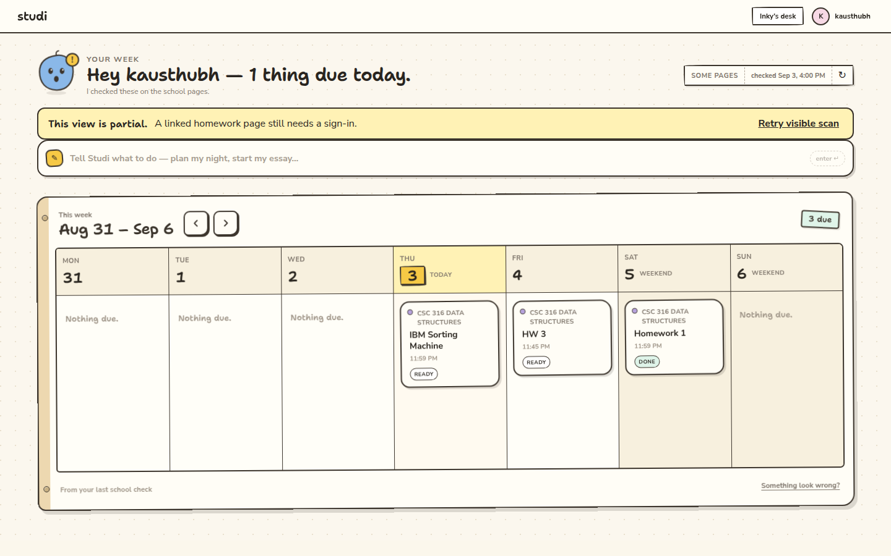
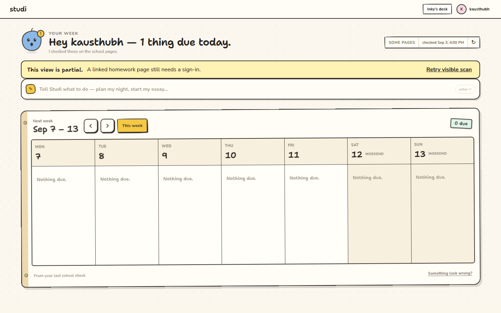
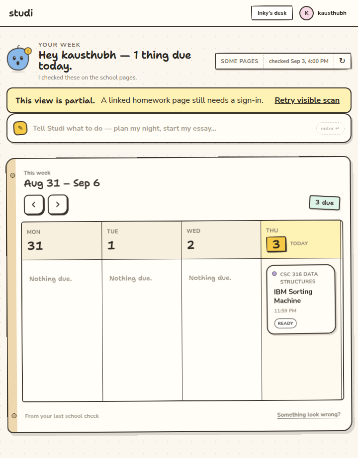

Based on GitHub codex/week-navigation. The first pass added Monday–Sunday weeks. The second pass made a clean calendar that did not match Studi. This pass rebuilds the board as the paper planner in .agents/.design/desk-week.html.
Production renderer at 1440 × 900 with the preview fixture frozen to September 3, 2026. Sample homework, not a live school scan.

Next week. Homework leaves the board. The yellow This week sticky appears. Greeting still says one thing is due today.


bun run typecheck: passed.bun run build: passed; existing dependency annotation and chunk-size warnings.node --experimental-strip-types --test tests/ui/week-calendar.test.mjs: three tests passed in America/New_York and UTC./?preview=week: next/previous, return, 2 weeks ahead, assignment filtering, count, unchanged today greeting, no Today marker on other weeks, no This week sticky on the current week, keyboard arrows and Home on the week grid, assignment drawer, feedback note, 40px arrows, no page overflow at 1440 and 720. Weekend columns reachable by scrolling the board at 720px..agents/studi-qa/profile, and the launcher is PowerShell. No profile, identity, or school data was changed.